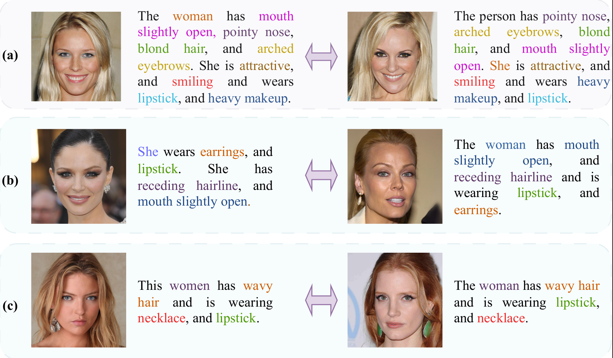
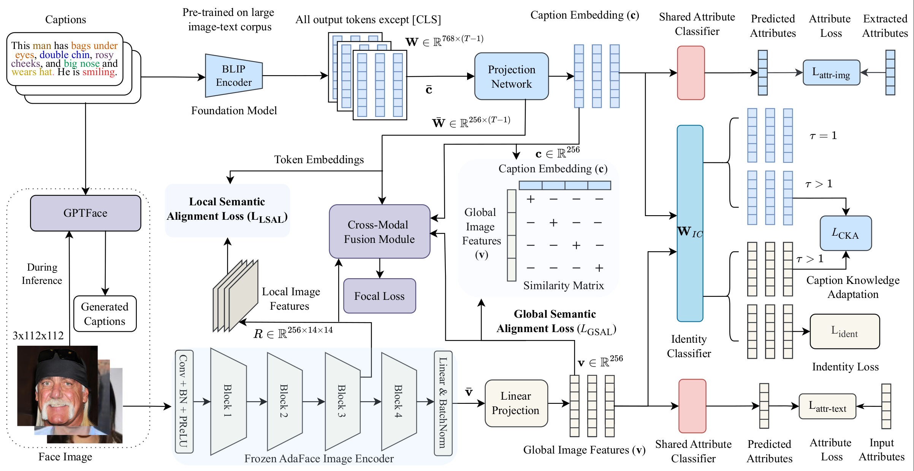
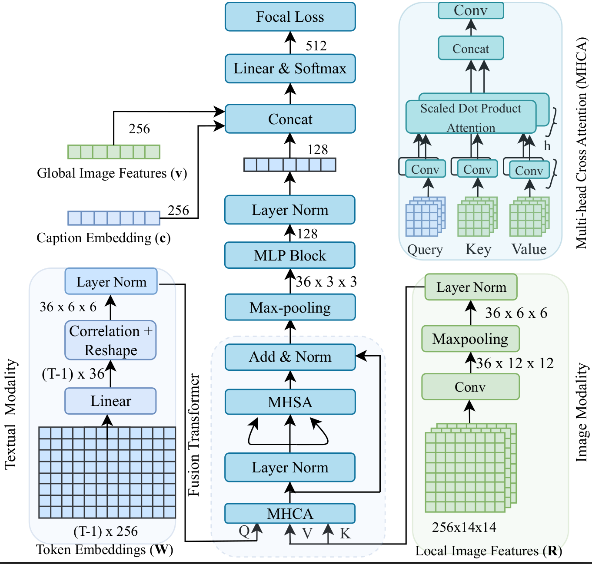
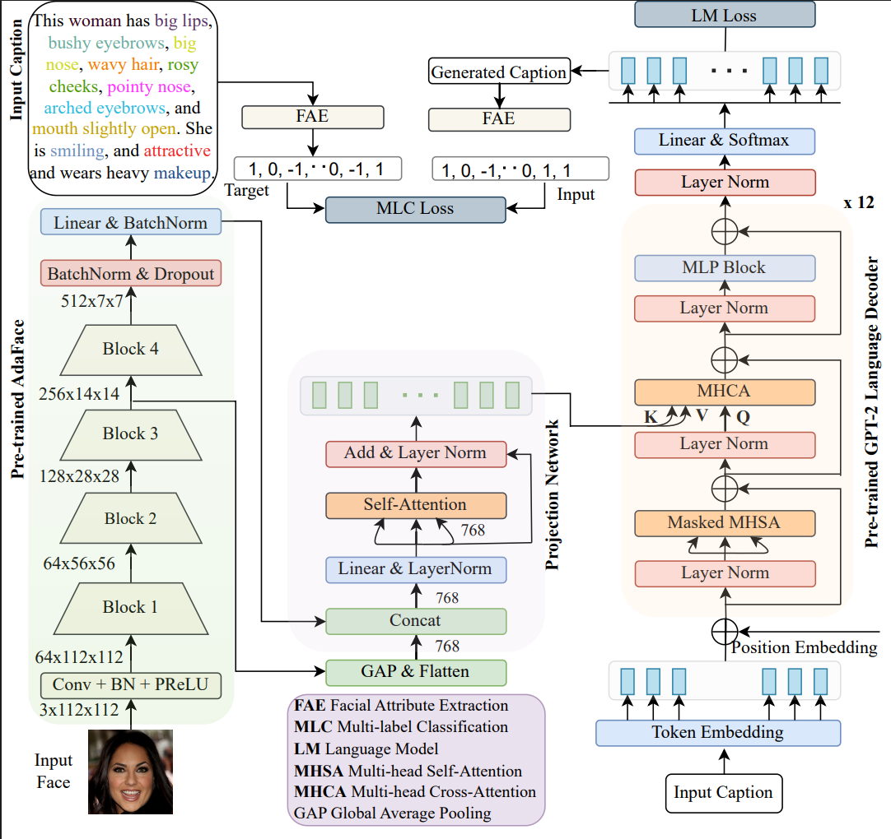
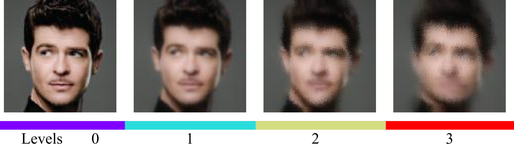
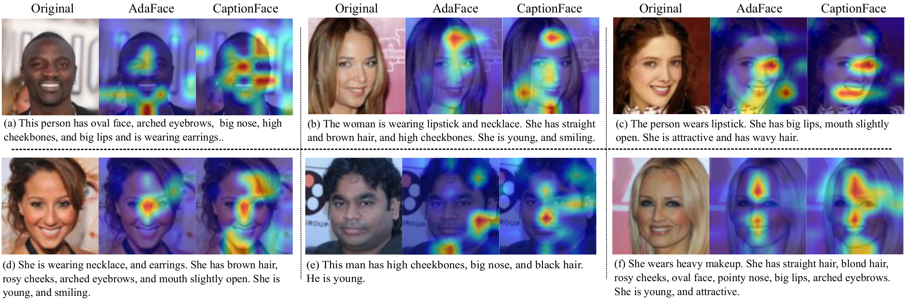

IEEE Transactions on Biometrics, Behavior, and Identity Science (TBIOM), Vol. 7, No. 2, pp. 195–209, April 2025
Lane Department of Computer Science and Electrical Engineering, West Virginia University
Text-guided face recognition (TGFR) aims to improve the performance of state-of-the-art face recognition (FR) algorithms by incorporating auxiliary information, such as distinct facial marks and attributes, provided as natural language descriptions. Current TGFR algorithms have been proven to be highly effective in addressing performance drops in state-of-the-art FR models, particularly in scenarios involving sensor noise, low resolution, and turbulence effects. Although existing methods explore various algorithms using different cross-modal alignment and fusion techniques, they encounter practical limitations in real-world applications. For example, during inference, textual descriptions associated with face images may be missing, lacking crucial details, or incorrect. Furthermore, the presence of inherent modality heterogeneity poses a significant challenge in achieving effective cross-modal alignment. To address these challenges, we introduce CaptionFace, a TGFR framework that integrates GPTFace, a face image captioning model designed to generate context-rich natural language descriptions from low-resolution facial images. By leveraging GPTFace, we overcome the issue of missing textual descriptions, expanding the applicability of CaptionFace to single-modal FR datasets. Additionally, we introduce a multi-scale feature alignment (MSFA) module to ensure semantic alignment between face-caption pairs at different granularities. Furthermore, we introduce an attribute-aware loss and perform knowledge adaptation to specifically adapt textual knowledge from facial features. Extensive experiments on three face-caption datasets and various unconstrained single-modal benchmark datasets demonstrate that CaptionFace significantly outperforms state-of-the-art FR models and existing TGFR approaches.
CaptionFace extends our earlier WACV 2024 work, TGFR, with a deeper alignment module, a knowledge-distillation mechanism between modalities, an attribute-aware objective, and an end-to-end captioning model that removes the framework's dependence on having a caption available at inference time. It is evaluated on three face-caption datasets (Multi-Modal CelebA-HQ, Face2Text, CelebA-Dialog), on single-modal benchmark FR datasets (LFW, CALFW, AgeDB-30) using captions generated on the fly, and on a fine-grained image classification benchmark (CUB-200-2011) to show the alignment module generalizes beyond faces.


Four components make up the framework:
A lightweight face-captioning model (frozen AdaFace image encoder + 12-block GPT-2 decoder) that generates a natural-language description directly from a low-resolution face image, so CaptionFace can be applied to single-modal FR datasets that have no associated text.
Aligns image and caption embeddings at both the global level (global semantic alignment loss) and the local, region-to-token level (local semantic alignment loss).
A distillation mechanism that enriches the caption embedding with image-specific detail it might be missing, instead of forcing an identity loss directly onto noisy text features.
A transformer block with multi-head cross- and self-attention that fuses local image features with caption token embeddings for the final identity decision, trained with a focal loss.
An attribute-aware loss is applied on both modalities using a 40-attribute vector extracted from the caption with TextBlob, adding a modality-invariant, fine-grained supervisory signal on top of the identity loss.

GPTFace pairs a frozen AdaFace image encoder with a 12-block GPT-2 language decoder. Since GPT-2 has no native mechanism for consuming encoder features, a cross-attention scheme is incorporated into every GPT-2 block. A projection network combines local and global image features extracted by AdaFace, with a self-attention layer added to capture long-range fine-grained dependencies before passing the combined representation into GPT-2's cross-attention.

GPTFace optimizes a language-modeling loss for next-token prediction, plus a multi-label classification loss (L_attr-text) that penalizes the decoder for missing or misrepresented facial attributes in the generated caption, judged against attributes extracted from the ground truth using TextBlob.
TPR (%) at FPR = 1e-6 / 1e-5 / 1e-4, both ArcFace and AdaFace as the image encoder, BLIP as the text encoder.
| Backbone | Method | MMCelebA | Face2Text | CelebA-Dialog |
|---|---|---|---|---|
| ArcFace | CGFR | 51.20 / 66.32 / 78.05 | 51.50 / 63.50 / 65.92 | 34.89 / 64.90 / 74.83 |
| TGFR (WACV 2024) | 52.63 / 67.72 / 78.73 | 52.26 / 64.28 / 67.06 | 36.09 / 66.02 / 76.84 | |
| Baseline I (image only) | 36.31 / 49.47 / 55.71 | 43.33 / 46.10 / 52.14 | 21.58 / 59.09 / 66.46 | |
| Baseline II (BERT + fusion) | 47.32 / 63.89 / 72.83 | 50.21 / 62.56 / 64.96 | 31.60 / 63.77 / 70.23 | |
| CaptionFace (ours) | 54.45 / 68.52 / 79.78 | 53.36 / 65.29 / 67.81 | 37.09 / 66.48 / 78.90 | |
| AdaFace | CGFR | 60.20 / 65.80 / 81.0 | 57.76 / 61.60 / 65.0 | 41.90 / 63.36 / 74.88 |
| TGFR (WACV 2024) | 61.0 / 68.20 / 81.0 | 59.06 / 64.29 / 67.81 | 43.16 / 65.50 / 75.20 | |
| Baseline I (image only) | 36.21 / 56.78 / 70.75 | 52.78 / 54.65 / 57.90 | 28.26 / 59.39 / 68.67 | |
| Baseline II (BERT + fusion) | 57.68 / 65.50 / 78.0 | 56.27 / 58.60 / 62.0 | 38.56 / 61.78 / 72.51 | |
| CaptionFace (ours) | 62.56 / 69.38 / 81.0 | 60.85 / 65.29 / 68.89 | 44.50 / 67.06 / 76.67 |
CaptionFace is the top-performing method on all three datasets with both image encoders. With AdaFace, it outperforms TGFR by 1.56 / 1.18 / 0 points on MMCelebA, 1.79 / 1.0 / 1.08 on Face2Text, and 1.34 / 1.56 / 1.47 on CelebA-Dialog at TAR@FAR = 1e-6 / 1e-5 / 1e-4.
Verification accuracy (%) on LFW / CALFW / AgeDB-30, captions generated on the fly by GPTFace (no ground-truth text at test time).
| Backend | Method | LFW | CALFW | AgeDB-30 |
|---|---|---|---|---|
| iResNet50 | ArcFace* | 99.80 | 95.40 | 98.08 |
| MagFace* | 99.82 | 95.98 | 98.0 | |
| AdaFace | 99.82 | 96.07 | 97.85 | |
| Ours (ArcFace) | 99.85 | 95.70 | 98.19 | |
| Ours (MagFace) | 99.85 | 96.07 | 98.14 | |
| Ours (AdaFace) | 99.86 | 96.13 | 98.02 | |
| iResNet101 | ArcFace | 99.83 | 95.45 | 98.28 |
| MagFace | 99.83 | 96.15 | 98.17 | |
| AdaFace | 99.82 | 96.08 | 98.05 | |
| Ours (ArcFace) | 99.86 | 95.61 | 98.35 | |
| Ours (MagFace) | 99.86 | 96.22 | 98.28 | |
| Ours (AdaFace) | 99.87 | 96.15 | 98.19 |
*Our implementation. Backbones are kept frozen during CaptionFace training (paper Section IV.A.3). LFW and AgeDB-30 are near saturation, but CaptionFace still consistently improves over every corresponding FR model.
Captioning quality on MMCelebA. GPTFace runs at 112×112 input, roughly a third the resolution of BLIP / BLIP-2.
| Method | Visual backbone | Input | B@1 | B@2 | B@3 | B@4 | METEOR | ROUGE-L |
|---|---|---|---|---|---|---|---|---|
| BLIP | ViT-B/16 | 384² | 76.84 | 66.54 | 54.13 | 44.56 | 60.41 | 60.68 |
| BLIP-2 | ViT-g FT5 | 384² | 84.56 | 73.85 | 66.0 | 57.36 | 61.94 | 61.12 |
| Ours | ArcFace | 112² | 90.08 | 85.64 | 78.28 | 69.24 | 59.60 | 60.50 |
| AdaFace | 112² | 91.10 | 86.0 | 78.96 | 69.90 | 59.80 | 60.74 |
GPTFace with AdaFace outperforms BLIP and BLIP-2 by 25.34% and 12.54% in B@4, while using a third the input resolution and far fewer trainable parameters (177M vs. 446M / 1.1B).
Rank-1 accuracy (%), caption supervision only — no bounding boxes or part annotations used.
| Method | BBox | Parts | Caption | Rank-1 Acc. |
|---|---|---|---|---|
| ResNet18 | ✗ | ✗ | ✗ | 72.77 |
| TGFR | ✗ | ✗ | ✓ | 76.0 |
| Ours (CaptionFace) | ✗ | ✗ | ✓ | 78.0 |
| ResNet50 | ✗ | ✗ | ✗ | 78.96 |
| TGFR | ✗ | ✗ | ✓ | 82.80 |
| Ours (CaptionFace) | ✗ | ✗ | ✓ | 84.84 |
CaptionFace improves 5.23 points over plain ResNet18 and 5.88 points over plain ResNet50, surpassing TGFR by roughly 2 points on both backbones — confirming the alignment module generalizes beyond faces.
TAR@FAR (%) on MMCelebA with AdaFace; identity loss and focal loss are present in every row as the baseline.
| LGSAL | LLSAL | LCKA | Lattr | 1e-6 | 1e-5 | 1e-4 |
|---|---|---|---|---|---|---|
| – | – | – | – | 53.45 | 64.26 | 75.35 |
| ✓ | – | – | – | 57.60 | 66.90 | 78.0 |
| – | ✓ | – | – | 58.02 | 66.70 | 78.89 |
| – | – | ✓ | – | 54.80 | 65.5 | 76.40 |
| – | – | – | ✓ | 58.91 | 65.38 | 77.40 |
| ✓ | ✓ | ✓ | ✓ | 62.56 | 69.38 | 81.0 |
Every loss term contributes positively. Combined, the full objective surpasses the identity + fusion baseline by 9.11 / 5.12 / 5.65 points at TAR@FAR = 1e-6 / 1e-5 / 1e-4.
EER and TAR@FAR (%) on MMCelebA as image quality degrades with simulated atmospheric turbulence (D/r₀ ratio).
| Method | Degrad. level | EER ↓ | 1e-5 | 1e-4 | 1e-3 |
|---|---|---|---|---|---|
| AdaFace | 0 | 5.77 | 56.78 | 70.75 | 82.17 |
| TGFR | 3.89 | 68.20 | 81.0 | 87.46 | |
| Ours | 3.50 | 69.38 | 81.0 | 89.20 | |
| AdaFace | 1 | 7.67 | 46.84 | 58.18 | 69.93 |
| TGFR | 5.82 | 59.12 | 70.6 | 77.87 | |
| Ours | 5.33 | 60.08 | 72.0 | 79.24 | |
| AdaFace | 2 | 12.68 | 32.13 | 37.55 | 48.31 |
| TGFR | 9.75 | 48.05 | 51.17 | 57.62 | |
| Ours | 9.24 | 48.05 | 54.21 | 60.33 | |
| AdaFace | 3 | 20.47 | 15.61 | 21.28 | 32.32 |
| TGFR | 13.39 | 28.34 | 37.06 | 49.19 | |
| Ours | 12.96 | 30.72 | 38.34 | 52.32 |
At the most severe degradation level (3), CaptionFace improves 2.38 / 1.28 / 3.13 points over TGFR and 15.11 / 17.06 / 20.0 points over plain AdaFace. The performance gap widens as image quality worsens.

Grad-CAM++ class activation maps show that CaptionFace's attention shifts toward the facial regions actually mentioned in the caption, rather than spreading uniformly across the face or background the way the plain AdaFace encoder does.

The repository includes CaptionFace training and evaluation, the standalone GPTFace captioning model, the fine-grained classification extension on CUB-200-2011, and the legacy BERT-encoder baseline used for comparison in the paper.
Train CaptionFace on CelebA with the AdaFace backbone and Cross-Modal Fusion Module:
python3 src/train_captionface.py \
--dataset celeba \
--model_type adaface \
--fusion_type CMF_FR \
--batch_size 8 \
--max_epoch 18 \
--is_itc --is_KD --is_attr_lossEvaluate 1:1 verification on the held-out face-caption test split:
python3 src/test_captionface.py --model_type adaface --dataset celebaFull installation steps, dataset layout, pretrained-weight paths, and the complete command reference for GPTFace training, benchmark FR evaluation, and the CUB-200-2011 extension are in the repository README.
View the GitHub repository →If you use this code or build on this work, please cite:
This paper extends two earlier works on text-guided face recognition: